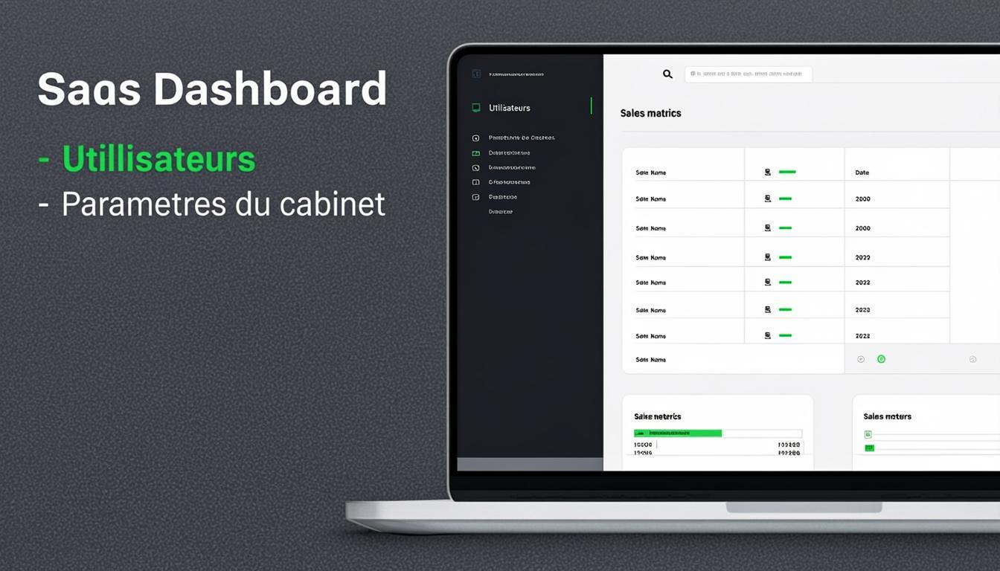

Chapitre 1
Introduction
Bienvenue dans le manuel d'utilisation de JurisLink pour le profil Administrateur Cabinet. En tant qu'administrateur, vous disposez du niveau d'accès le plus élevé du système. Vous pouvez accomplir toutes les opérations de l'Associé, auxquelles s'ajoutent la gestion complète des utilisateurs et la modification des paramètres du cabinet.
Votre rôle est essentiel pour la configuration et la maintenance de l'application : création et modification des comptes utilisateurs, attribution des rôles, gestion des paramètres du cabinet (informations légales, modèles de documents, catégories de facturation) et accès aux journaux d'audit.
Résumé de vos capacités :
✓Dossiers, Clients, Documents, Factures, Tâches, ÉvénementsAccès complet : consultation, création, modification et export. Suppression uniquement pour les documents.
✓UtilisateursConsultation, création et modification des comptes utilisateurs et de leurs rôles.
✓Paramètres du cabinetConsultation et modification de tous les paramètres de configuration.
✓Audit & RapportsAccès complet aux journaux d'audit et aux rapports avec export.
Chapitre 2
Premiers pas
Connexion à l'application
1Accéder à l'écran de connexionLancez JurisLink depuis votre navigateur. L'écran de connexion s'affiche avec les champs Identifiant et Mot de passe.
2Saisir vos identifiantsEntrez votre identifiant administrateur et votre mot de passe. Ces identifiants sont définis lors de l'installation initiale du cabinet.
3Valider la connexionCliquez sur « Se connecter ». Vous accédez au tableau de bord Administrateur Cabinet.
Présentation du tableau de bord
Le tableau de bord administrateur affiche un résumé global de l'activité du cabinet avec des indicateurs supplémentaires : nombre d'utilisateurs actifs, alertes système, statut des abonnements et journaux d'audit récents.

Figure 1 — Tableau de bord de l'Administrateur Cabinet
Navigation dans le menu latéral
Le menu latéral comprend toutes les sections standards (Dossiers, Clients, Documents, Factures, Tâches, Agenda, Messages, Rapports) ainsi que deux sections réservées à l'administrateur : « Utilisateurs » et « Paramètres ».